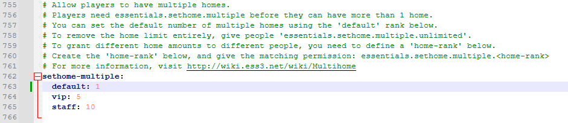

Edit Plugin Configuration File
Some plugins have customizability that can't be changed with commands. Edit the EssentialsX configuration file to change the number of default homes from 3 to 1.
- Navigate to the Essentials folder inside the server's plugins folder.
- Right Click and edit config.yml
- Use Control + F to search in the document for "sethome-multiple:" and press Enter.
-
Inside the the sethome-multiple: tree, change the value of
default: to 1.
Players can use the /sethome <name> and /home <name> commands to make teleportable waypoints. This will make the default number of home a user can have to 1.
 - Save the file and exit out of config.yml.
- Reload all plugins by using the /reload and /reload confirmcommands.
Continue to: Test Plugin on a Minecraft Client